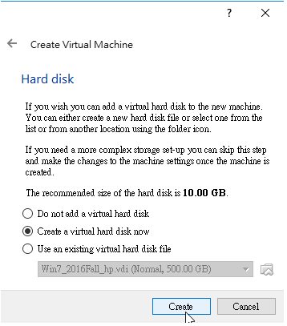

VirtualBox
利用 Virtualbox 建立虛擬 Ubuntu 18.04 網際內容管理系統伺服主機:
1. 安裝最新版的 Virtualbox
2. 建立 Ubuntu 18.04 虛擬主機
3. 以網路卡橋接啟動 Ubuntu 伺服器
4. 以 sudo apt install nginx 安裝 nginx WWW 伺服器
5. 以 ifconfig 查 Ubuntu 伺服器的 IP, 測試 nginx 伺服器是否可以連線
6. 以 Windows 10 下的 Filezilla client, 將編輯好的 nginx 設定檔案送到 Ubuntu
7. 利用 Ubuntu 指令將設定檔案搬至設定位置後, 以 /etc/init.d/nginx restart 重新啟動 nginx
8 . 在 Ubuntu 中以 sudo apt install uwsgi 安裝 uwsgi
9. 在 Windows 10 編輯 uwsgi 與 nginx 所需的設定檔案, 完成後以 filezilla 送至 Ubuntu.
10. 將 CMSimfly 程式碼送到 Ubuntu 伺服器中對應目錄後.
11. 在 Ubuntu 建立 cmsimfly 服務, 並設定隨機啟動.
12. 完成後, 在 Windows 10 以瀏覽器連線至 CMSimfly, 確認動態網頁與靜態網頁可以在 虛擬主機中正常啟動.
創建名字
4096MB大小
點選中間的選項,並按Create

改為500GB
點選VMDK

創建好後按啟動，選擇已下載好的檔案並創建
打ifconfig查詢IP位置
再將編輯好的 nginx 設定檔案送到 Ubuntu
WEEK15 << Previous Next >> 上傳youtube影片